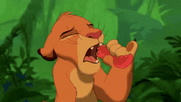
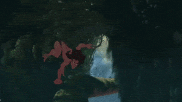
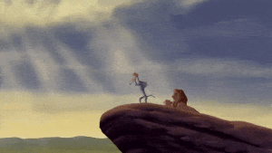
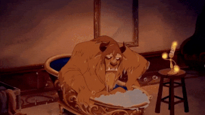
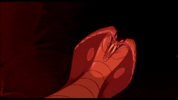
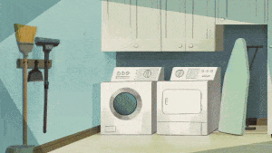
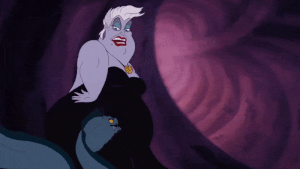
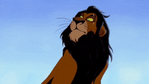

Squash and Stretch
The Squash and Stretch technique is used by animators to convey an object's weight, flexibility, and hardness.
For example, when there is an animation of an object falling, it gets flattened when it touches the ground and stretches out to maintain its volume. This shows that the object is flexible.
Similarly, with characters, their faces and bodies are stretched and compressed to express emotions.
Here’s an example of how the Squash and Stretch technique is used in The Lion King movie. Look at how Simba’s expressions are showcased using this technique when he tries a bug for the first time.


Anticipation
Anticipation in animation prepares the audience for what will happen next. It involves a small movement or action that precedes a larger one.
For instance, before a character jumps, they will often squat momentarily. This squatting motion is an example of anticipation in animation, as it signals to the audience that a jump is coming up.
In this example, Tarzan creates an anticipation effect by squatting and jumping around high branches and vines.
This technique makes the animation realistic as it mimics how we move and act in real life, where small movements often precede our actions.
Staging
Staging in Animation involves arranging characters, props, background, and camera perspective.
You might have noticed that in animation, a scene unfolds in a sequence and not all at once. This directs the viewer’s focus on one thing at a time.
The below gif from The Lion King is a perfect example of it. The four characters on the stone ledge are the main focus. As the camera gradually zooms out, additional elements are brought into the frame. This allows the viewer to grasp the entire scene fully.If too many simultaneous actions exist, the viewer's focus gets lost. So, good staging is crucial for successful storytelling.


Straight Ahead Action and Pose to Pose
Drawing animations can be done in 2 ways - Straight Ahead Action and Pose to Pose.
Straight ahead action involves drawing an action frame by frame, creating a smooth flow of movement. This method requires starting with a drawing and then proceeding to draw sequentially, most of the time not knowing the last frame.
However, this approach is time-consuming as it requires many frames to be drawn for a single action.
The example below uses the Straight Ahead technique. Here, the prince from the movie Beauty and the Beast, shakes off the water in a smooth manner.
Follow Through and Overlapping Action
Follow Through and Overlapping action are two important techniques used in animation to create realistic and fluid motion. These techniques involve parts of the character in motion even after the character has stopped.
For example, when a character wearing a cape runs and comes to a halt, the cape and the character’s hair continue to sway for a moment before they get pulled back to the character. Here, the cape follows through with the character’s motion. The tendency of the cape and hair to move at a different rate from the character depicts the overlapping action.
Here’s an example from the movie Mulan. The protagonist looks from side to side in disbelief. As she moves her head, her hair follows through and overlaps with her action.
Slow In and Slow Out
In the practical world, objects take time to gain speed. They don’t change their speed from 0 to 100 instantly.
So, to create a more realistic effect, animators make the motion of characters start and end slowly with faster movement in between. This change in speed makes the movement more lifelike.
To achieve this effect, animators draw more frames near the action's beginning and end to create the impression of slow movement. They draw fewer frames in between to highlight speed.
To understand this technique visually, look at the example below. Here, Cinderella moves slowly at the beginning and then gains speed before slowing down again. This creates a smooth flow in the movement, and it feels non-linear. However, it is essential to use this technique where it doesn’t defy the laws of physics. For instance, it's impossible to use this technique to animate a falling leaf from a tree since the leaf’s movement will be solely dependent on wind.
Arc
Arcs refers to the movement of an object or a character in curves rather than a straight line. We humans, move in curves. Even a simple movement, like turning our head, follows a curved path. Imagine turning your head in a straight line. It almost feels robotic and creepy.
So, to make the animation more realistic and natural, animators use this technique of curved trajectory motion. For example, when a character swings their sword, it is animated in a curved path rather than a straight line.
Here, Aladdin swings the sword at the snake in an arched motion, which makes the animation feel complete.

Secondary Action
Secondary action enhances the main action and provides more detail to the primary action. These secondary actions can be used to create a character's personality trait or to depict the character’s emotions.
For example, let’s say a character is eating a burger. This is the main action. But when they raise their eyebrows after the first bite, that is a secondary action that adds more detail to the scene. It shows that the character is surprised by the taste.
In this example, when denied snacks, Stitch becomes adorably angry. His ears moving back is the secondary action, which adds detail to this main action.
Timing
The term “Timing” refers to the speed of the scene, which is determined by the number of frames used. If more frames are used, the scene will appear to be slower. On the other hand, fewer frames will make the scene look quicker.
It is important to establish timing properly for each object in the animation with respect to the object’s size and weight. For instance, if a character is shown rolling a large ball, the timing will vary depending on the ball's weight.
If the ball is lighter, the character will take less time to move it so fewer frames will be required. On the contrary, if the ball is heavier, the character will take a longer time to move it, so more frames must be drawn.
Here, in the Aladdin movie climax, the Genies’ dancing is quick, which means fewer frames are used to make this action.

Exaggeration
Exaggeration animation is used to create a dramatic effect and enhance the storytelling.
This technique is applied to actions, expressions, and even poses to make them more impactful.
By exaggerating certain elements, animators can also add a comical effect to the animation. For example, extreme facial expressions after a character accidentally walks into a pole make the scene hilarious.
Let’s look at an example. Here, Goofy loses balance due to his rollerskates. The following actions are exaggerated to make it funny.
Solid Drawing
Solid Drawing is an essential technique in the animation industry. It involves giving characters weight and volume by drawing them in a proper shape as they would appear in a 3-dimensional space.
To achieve this, animators draw the character in several poses and angles, ensuring that the proportions remain consistent throughout the scenes.
In the movie The Little Mermaid, Ursula is floating in a twirl. Her body changes as she moves, giving her a 3D appearance.It is worth noting that animators Thomas and Ollie have advised against using “twins” - characters with symmetrical facial features as it creates mirrored visuals that can feel unrealistic.


Appeal
Creating an appealing character is crucial to make it memorable and exciting to the audience. The term “appeal” doesn’t only refer to physical attractiveness but also to the character’s intriguing and charming traits.
The appeal is necessary for all characters that are vital to the video or movie. It is not just limited to heroes, as even villains deserve a strong appeal to add weight to their character.
For instance, Scar, the antagonist of The Lion King, is known for his distinct facial features. His green eyes and scar make a strong appeal, adding weight to the negative character.

.gif)